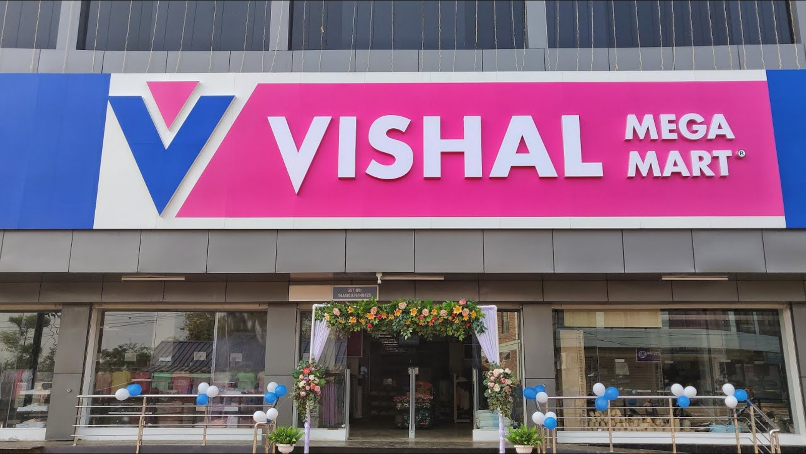

CHITTOOR
VISHAL MEGA MART

India’s largest fashion-led hypermarket chain, has risen to prominence with over 400 stores scattered across the country.
Founded in 2001 by Ram Chandra Agrawal, the company started as a modest venture, primarily focused on offering ready-made apparel.
Vishal Mega Mart has been a successful store enterprise founded by the highly inspirational person in Indian business world
Vishal Mega Mart has a history of ownership change, but the name of the founder-Ram Chandra Agarwal-is still alive in that organization.